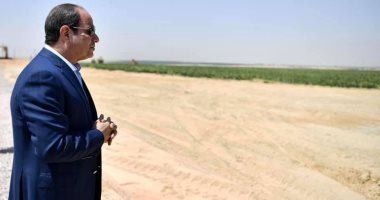
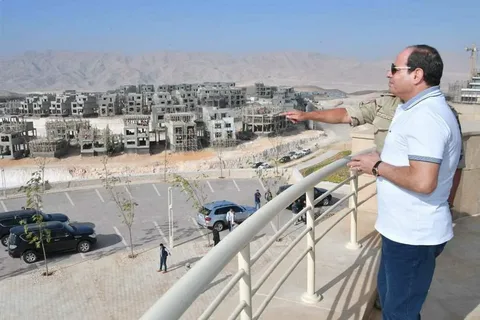
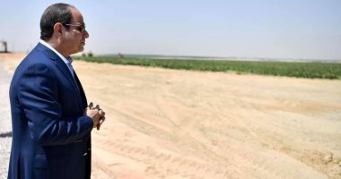
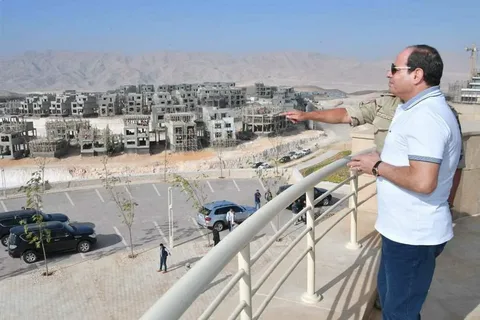

مشروع مستقبل مصر للإنتاج الزراعي

افتتح السيد الرئيس عبد الفتاح السيسي في 21/5/2022 مشروع مستقبل مصر للإنتاج الزراعي، الذي يقع على امتداد طريق محور روض الفرج - الضبعة الجديد، والذي يعد قاطرة مصر الزراعية وباكورة مشروع الدلتا الجديدة لتحقيق الاكتفاء الذاتي وتصدير الفائض، حيث أن المساحة المستهدف استصلاحها مليون وخمسون ألف فدان من إجمالي مساحة الدلتا الجديدة ٢.٢ مليون فدان، ترجع بداية المشروع الي أبريل 2017 .. حين وجه الرئيس السيسي بالبدء فورا في تنفيذ مشروع مستقبل مصـر للإنتاج الزراعـي لـتـوفير منتجـات زراعيـة ذات جـودة عاليـة بأسعار مناسـبة للمـواطنين وتصـدير الفـائض للخـارج ممـا يسـاهم في تقليل الإستيراد وتوفير العملة الصعبة وتحقيق أهداف التنمية المستدامة.
المساحة المستهدف استصلاحها
مليون وخمسون ألف فدان من إجمالي ٢.٢ مليون فدان المساحة الإجمالية للدلتا الجديدة.
الهدف من المشروع
- أولًا تعظيم فرص الإنتاج وتوفير منتجات زراعية بجودة عالية وأسعار مناسبة للمواطنين، وسد الفجوة بين الإنتاج والاستيراد وتحقيق الأمن الغذائي والاكتفاء الذاتي من السلع الاستراتيجية.
- ثانيا توفير حـوالي 10 آلاف فرص عمـل مباشـرة وأكثـر مـن 360 ألـف فرصـة عمـل غير مباشرة ، ومن المتوقع زيادة فرص العمالة خلال المواسم القادمة.
موقع المشروع
يقع المشروع على امتداد طريق محور روض الفرج - الضبعة الجديد، وهو الطريق الذي أُنشئ ضمن المشروع القومي للطرق بطول ١٢٠ كم وعمق ٦٠: ٧٠ كم، ويبعد ٣٠ دقيقة عن مدينة السادس من أكتوبر، تم تقسيم المشروع إلى عدد (٦٠) طريق طولي، ٣٥ طريق عرضي مقسمة إلى قطع متساوية كل قطعة ١٠٠٠ فدان.
ويعد موقع المشروع من أهم المزايا الاستراتيجية لتوافر الأيدي العاملة، بالإضافة إلى سهولة وصول مستلزمات الإنتاج كالأسمدة والمبيدات والبذور والمعدات وكذلك سهولة توصيل المنتجات النهائية إلى الأسواق الرئيسية وإلى موانئ التصدير البرية والجوية.
أساليب الري
يتم نقل مياه الصرف المعالج بواسطة ترعة بإجمالي طول ١٧٠ كم عن طريق ١٧ محطة رفع لتصل إلى أكبر محطة معالجة بطاقة ٧.٥ مليون متر مكعب/ يوم ومنها إلى أرض المشروع، وصلت نسبة تنفيذ المحطة إلى ٧٠٪ ومخطط الانتهاء من محطة المعالجة شهر يوليو ٢٠٢٢م.
يعتمد المشروع على خزانات المياه الجوفية وهي ٣ خزانات (الأيوسين – المايوسين - المغرة) وهي امتداد لمنطقة وادي النطرون وذلك بحفر الآبار الجوفية مع الوضع في الاعتبار المسافة البينية بين الآبار للحفاظ على الخزانات الجوفية وعدم السحب الجائر منها وتحقيق معايير التنمية المستدامة، وجاري دخول مصدر مياه سطحي بمد ترعة مستقبل مصر بطول ٤١ كم لإمداد المشروع بطاقة ١٠ مليون م³/يوم لزراعة حوالي ٧٠٠ ألف فدان إضافيةوتعد تحلية مياه الصرف الزراعي وإعادة تدويرها واستخدامها للري من أكبر التحديات في مشروع الدلتا الجديدة.
كما سعى المشروع لتوفير الميكنة الزراعية بأحدث المعدات والتقنيات لإتمام العمليات الزراعية المختلفة بجودة وسرعة عالية.
تم الانتهاء من استصلاح وزراعة مساحة ٣٥٠ ألف فدان باستخدام ٢٦٠٠ جهاز ري محوري مطور والتي يتم زراعتها مرتين سنويًا (موسم صيفي /موسم شتوي) والتي تنتج أجود المحاصيل الزراعية التي كان من أبرزها زراعات موسم ٢٠٢١/٢٠٢٠ – ٢٠٢٢/٢٠٢١ .
يعد المشروع قاطرة مصر الزراعية وباكورة مشروع الدلتا الجديدة لتحقيق الاكتفاء الذاتي وتصدير الفائض، حيث أن المساحة المستهدف استصلاحها مليون وخمسون ألف فدان من إجمالي ٢.٢ مليون فدان المساحة الإجمالية للدلتا الجديدة.
التكلفة
تبلغ التكلفة الإجمالية للمشروع ٨ مليار جنيه، والتي تشمل تمهيد الطرق الداخلية بإجمالي طول حوالي ٥٠٠ كم وعرض ١٠ أمتار وحفر آبار مياه جوفية ومحطتين للكهرباء بقدرة ٣٥٠ ميجا وات وشبكة كهرباء داخلية بطول ٢٠٠ كم يتم ربطها بشبكة كهرباء الدلتا الجديدة، ومخازن مستلزمات الإنتاج ومباني إدارية وسكنية .
فرص العمل
يوفر المشروع حوالي ١٠ آلاف فرصة عمل مباشرة وأكثر من ٣٦٠ ألف فرصة عمل غير مباشرة، ومن المتوقع زيادة فرص العمل خلال المواسم القادمة، كما يتم تطبق أعلى معايير السلامة والصحة المهنية في بيئة العمل لسلامة العمال والموظفين، وتقوم وزارة الزراعة واستصلاح الأراضي بتقديم الدعم الكامل ونقل الخبرات للمشروع.
يقوم المشروع بالإشراف على تنفيذ مشروع الصوب الزراعية بمنطقة (اللاهون) بمحافظة الفيوم بمساحة حوالي ١٦ ألف فدان بإجمالي حوالي ١٨٠٠ صوبة (إسباني – مصري) لزارعة محاصيل الخُضروات مثل (فلفل ألوان – طماطم سلكية – طماطم شيري – فاصوليا خضراء) نباتات طبية وعطرية مثل (بردقوش – ينسون – زعتر – نعناع) وزراعات الفاكهة مثل (عنب – مانجو – رمان – موز – التين الإسباني) زهور القطف لغرض التصدير مثل (قرنفل أمريكي – الزنبق – الورد البلدي – الجلاديوس).
كما يقوم مشروع مستقبل مصر بالإشراف على تنفيذ مشروع المنيا وبني سويف لاستصلاح مساحة حوالي ٨٠ ألف فدان ومن المخطط لها زراعة (قصب السكر – القمح – الذرة الصفراء – فول بلدي – البرسيم الحجازي).
المرحلة الأولى
تشتمل المرحلة الأولى على (ثلاجات بطاطس – محطات فرز وتعبئة – صوامع تخزين الغلال – محطات غربلة وإنتاج تقاوي – معامل تحليل التربة وأمراض النباتات).
والحالي منها (ثلاجات بطاطس بسعة ٨٠ ألف طن – محطات فرز وتعبئة – صوامع تخزين الغلال سعة ٢٠ ألف طن).
المرحلة الثانية
تشتمل على (أنفاق تجميد خضروات وفاكهة – مصنع سناكس – مصنع بصل وثوم مجفف – مصنع تعبئة وتغليف بقوليات – مصنع تعبئة وتكرير زيوت – مصنع أعلاف ماشية – مزرعة أغنام وماشية).
المرحلة الثالثة
تشتمل على (مصنع إنتاج زيوت – محطة فرز وتعبئة برتقال).
التوجه والرؤية لمشروع مستقبل مصر
- الحفاظ الدائم على التعليمات والتوجيهات الصادرة من السيد رئيس الجمهورية لتحقيق الأمن الغذائي وصولًا إلى الاكتفاء الذاتي.
- الحرص التام على المساعدة في القضاء على البطالة وتوظيف المدنيين في تخصصات مختلفة حتى يستشعر المواطن بحجم العمل المبذول وخطة السيد رئيس الجمهورية في التوسعات الاقتصادية التي من شأنها تحقيق النمو الاقتصادي والتنمية المستدامة.
- العمل بنظام المشاركة مع المستثمرين الزراعيين الجادين بمحددات وضوابط وخبرات في التعامل مع هذا النوع من اقتصاديات تعظيم العائد.
زراعات موسم ۲۰۲۲/۲۰۲۱
- القمح 40 ألف فدان
- الذرة الصفراء 32 ألف فدان
- الشعير12 ألف فدان
- البطاطس 55 ألف فدان
- بنجر السكر65 ألف فدان
- السوداني 20 ألف فدان
- فراولة 5 ألاف فدان
- عباد الشمس 630 فدان
- البطاطا 5 ألاف فدان
- الفاصوليا البيضاء 10 ألاف فدان
- البصل 18 ألف فدان
- طماطم 13 ألف فدان
- البسلة 4 آلاف فدان
- الجزر 6 ألاف فدان
- الخيار 4 آلاف فدان
- فول الصويا ألف فدان
المـوالح : تـم زيـادة الرقعـة الزراعيـة للأشـجـار مـن 10 ألاف فـدان إلـى 17 ألاف فـدان من البرتقال واليوسفى والليمون والجوافة والعنب والمانجو.